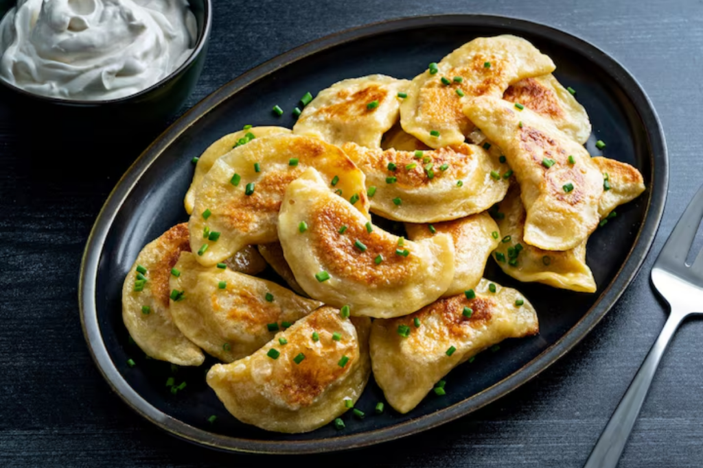
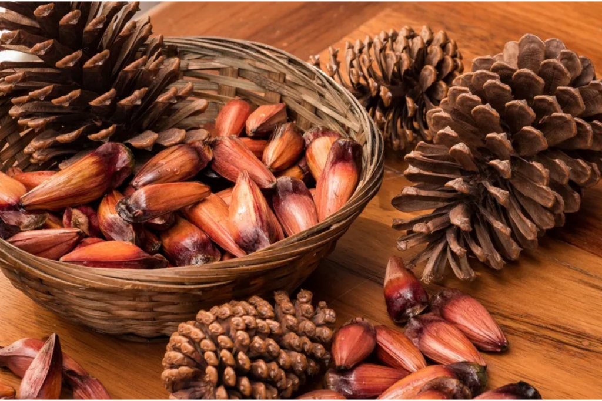
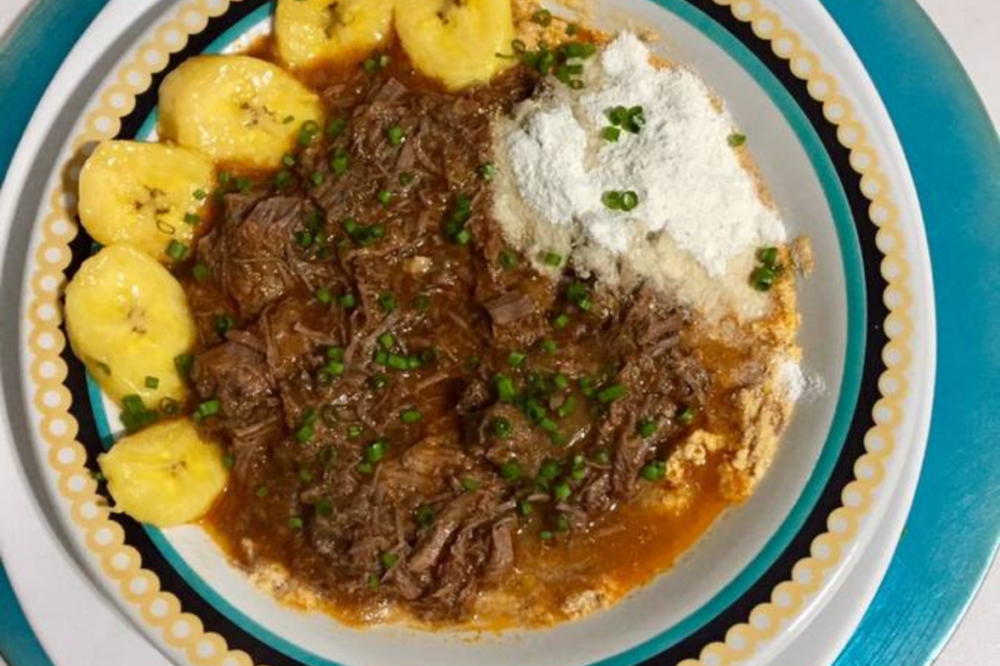
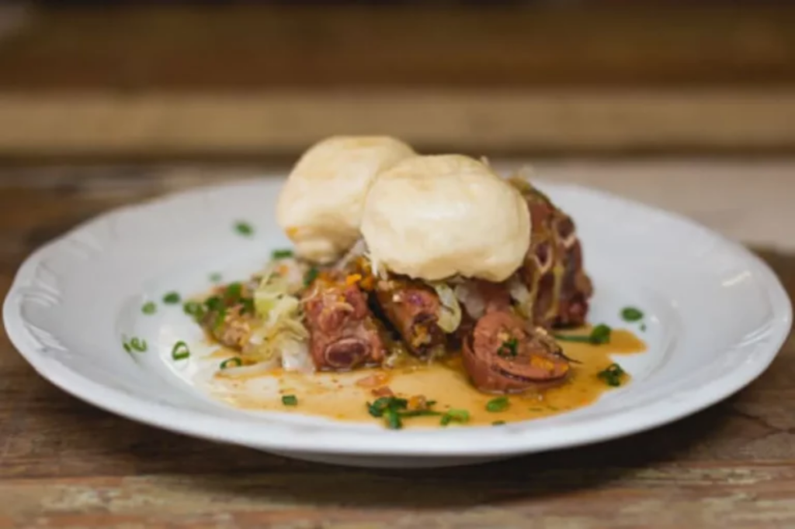

Sabores de Curitiba e do Paraná
Conheça pratos e ingredientes marcantes da culinária curitibana e paranaense.

Pierogi
O pierogi é uma herança da imigração polonesa e ucraniana e faz parte da gastronomia curitibana. Trata-se de um pastel cozido recheado com batata, ricota ou carne, geralmente servido com manteiga derretida e cebolas caramelizadas.
Confira mais
Pinhão
O pinhão é a semente da araucária, árvore que ocorre principalmente no Paraná. Muito consumido no Sul do Brasil no outono e no inverno, pode ser comido cozido ou assado.
Confira mais
Barreado
O barreado é um prato típico do Paraná, muito apreciado no litoral, com Morretes como a cidade onde é mais conhecido. A carne bovina cozida por muitas horas em panela de barro vedada desmancha em um caldo grosso e saboroso. Alguns restaurantes de Curitiba também o servem.
Confira mais
Pão no Bafo
O pão no bafo é um prato típico do Paraná, da região de Palmeira, nos Campos Gerais. Foi trazido pelos alemães do Volga por volta de 1878 e leva massa de pão cozida no vapor, repolho e derivados de carne suína.
Confira mais